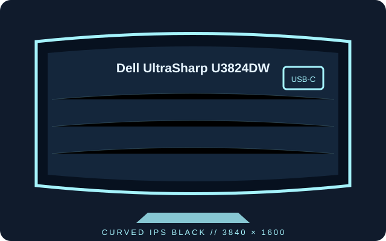

[ INDIVIDUAL COMPONENT // DISPLAYS ]
Dell UltraSharp U3824DW
A 37.5-inch curved WQHD+ IPS Black monitor with integrated USB-C hub and Ethernet.

IDENTIFICATION: Record the exact U3824DW suffix; its curved 21:9 panel and hub configuration are model-specific.
Specifications
| Catalog subcategory | LCD displays |
|---|---|
| Exact product | Dell UltraSharp U3824DW |
| Panel and native resolution | 37.5-inch curved IPS Black LCD, 3840 × 1600 (21:9) |
| Native refresh | 60 Hz at native resolution |
| Luminance / contrast | 300 cd/m² typical; 2000:1 typical |
| Inputs / companion ports | DisplayPort 1.4, HDMI 2.0 × 2, USB-C upstream with up to 90 W power delivery, RJ45 Ethernet, USB-A / USB-C hub |
| Stand / VESA | Height, tilt and swivel adjustment; 100 × 100 mm VESA mounting |
| Power / compatibility | 100–240 V AC, 50/60 Hz input; typical operating power is about 41.7 W. USB-C video and charging require a compatible DisplayPort Alt Mode host; confirm power budgets before docking. |
Preservation notes
Retain the supplied stand, USB-C cable and the model-matched guide. When troubleshooting, verify that the computer supports 3840 × 1600 at 60 Hz and note whether the connection is DisplayPort, HDMI or USB-C.
Manufacturer documentation and sources
- Dell — UltraSharp U3824DW product specificationsManufacturer product listing and published specifications.
- Dell Support — U3824DW manuals and documentationModel-specific setup, connectivity, safety and regulatory documents.